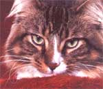

They've finally moved in on us.
Their origins steeped in lore and legend, these largish cats have become the best-selling breed in the country.
I had been working for quite some time writing a new piece of music for harp-guitar and celtic harp and finally arrived at the most difficult part-finding a title. It was a straightforward piece with a strong dose of good old-fashioned country, or pastoralism, about it, so I wanted an expressive tide, something to stimulate the imagination.
In the early morning, I like to work facing due east, when the angle of the light begins to flood the crimson curtains and spill onto the pages of the musical score in front of me. There is a transparency and a calm at that time of day which I find enhances my ability to concentrate. At any rate, I was searching for a tide when one of our cats, Calliope, a Maine coon cat, sashayed across the table, sat down at the head of my manuscript and stared directly at me. I think it must have been the effect of the morning light sweeping through that giant plume of a tall, or the intensity of her multicolored coat, piercing green eyes and whiskers spanning what seemed to be half the table that finally gave me the clue I had been looking for. I named the piece The Consolations of Calliope.
Who are these enigmatic creatures, Maine coon cats? Until a few years ago, I hadn't the foggiest idea. After A, a cat's a cat, right? Of course not. Until you have witnessed one of these magnificent animals surveying its domain with unquestionable superiority, you haven't experienced the full range of power and control that one of the more discerning of our domestic species can exert. When it chooses to. Ask any Maine coon cat. It just might tell you.
Maine coon cats originated, obviously enough, in Maine. The name derives from their resemblance to raccoons: enormous tail, distinct markings and larger than average size. According to legend, they are descended from long-haired tabbies, barn and farm cats that went feral centuries ago, although in some quarters the myth persists that they sprang from the unholy (and quite impossible) union of raccoon and cat. Another theory has it that the original cats were the pets of sailors and somehow survived shipwrecks off the rocky Maine coast. In any event, once in the wild, natural selection shaped the progenitors of our modem specimen. The tenacious long hair and greater size certainly appear to be accommodations to the harsh New England winters and authentic perils of life in the wild. Since planned breedings of Maine coons are relatively recent, these cats still hold their strong, rugged qualities.
SOMEHOW,Maine coon cats eventually manipulated their way into "good homes." They first appeared in cat shows and agricultural fairs during the 1870s. Over the next 20 years they became so firmly established that by 1895 a brown tabby Maine coon cat had won top prize at the illustrious Madison Square Show in New York City. In 19o8 when the Cat Fanciers Association (CFA) first opened its registry, the fifth cat registered was a tortoiseshell Maine coon. The breed apparently thrived until the 1930S when over-breeding and hybridization caused its popularity to wane. Coon cats remained relatively obscure until 13 years ago when Barbara Pilchard of Catch-a-Penny Cattery in Hebron, Maryland, now one of the country's leading breeders, arrived at the prestigious New York show with the only contending Maine coon cat. They have regained their popularity since, and today consistently contend for Best in Show throughout the country.
Unlike other longhairsHimalayans or Persians, for example-Maine coons do not require intense grooming since they lack the undercoats typical of most long-haired breeds. If you've ever owned a Persian, you know de-matting can be a time-consuming and maddening proposition, probably sufficient to drive you straight into the Maine coon cat camp.
THE size of this breed is its most striking characteristic: 10 to 15 pounds for females and 15 to 20 pounds for males. There are even a few unsubstantiated rumors of a purer strain weighing in at over 30 pounds, but most experts dismiss this as fantasy. In any event, 15 to 20 pounds is not your basic kitty, but a creature of serious proportion. Although they are perfectly tame and among the more personable of all breeds, their imposing stature fosters an illusion of wildness and severity. In fact, their friendliness and companionabilityterms I would be wary of ascribing to many cats-no doubt account for their welcome into the human household. Calliope will follow Allison, my wife and musical partner, from room to room for hours on end. She also perches on the table next to Allison while she and I play lute and celtic harp duets, attentive to the whole affair and occasionally demanding recognition by reaching out to strike a discordant note or two on the harp. Now that's a cat show!
Maine coon cats come in 58 different colors. Calliope is what is known as "blue, cream and white." She is all of that: a dark bluish hue interspersed with creamy stripes, highlighted at collar and paws with brilliant white. The fur around the collar fluffs out, occasionally giving the impression of an Elizabethan collar. Sometimes in Calliope I see a remote New England ancestor that once basked somewhere along the wild Maine coast in the warm sun of a perfect summer afternoon and consoled itself.
Linn Barnes, a musician, is a longtime Mother Earth News subscriber.
|
 |
|
|